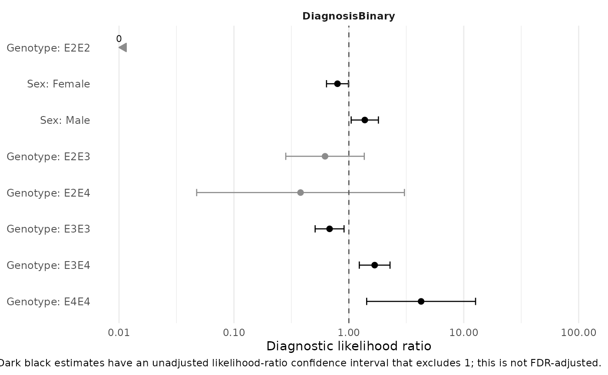
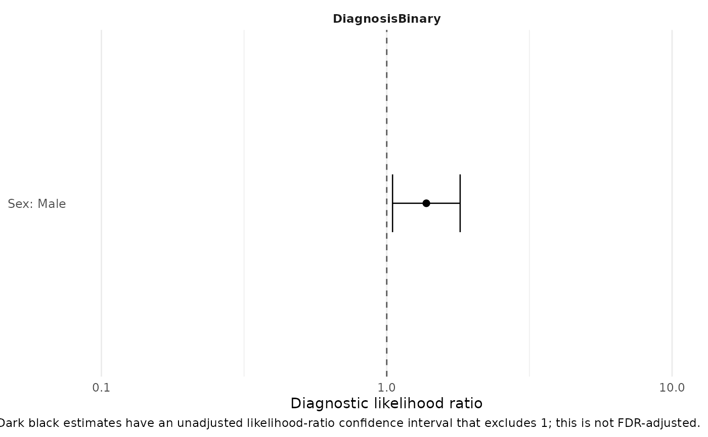

Plot diagnostic likelihood ratios as a forest plot
Source:R/PlotDiagnosticLRForest.R
PlotDiagnosticLRForest.RdVisualizes likelihood ratios calculated by DiagnosticLikelihoodRatioTable()
without recalculating diagnostic statistics. Each point is a diagnostic test
result and its horizontal interval is the likelihood-ratio confidence
interval. The logarithmic scale makes reciprocal likelihood ratios equally
distant from the neutral value of one.
Arguments
- x
An object returned by
DiagnosticLikelihoodRatioTable(), or a tidy data frame compatible with itsResultselement.- result
Diagnostic result levels to display:
"all","positive", or"negative". Positive and negative selections require the result object.- predictor_order
Predictor ordering:
"original","alphabetical", or"strength". Strength orders predictors by their largest finite absolute log2 likelihood ratio.- outcome_order
Outcome ordering with the same choices.
- facet_by
Plot panels by
"outcome"(the default) or"predictor".- facet_strata
Logical; add strata as facet row groups when present.
- limits
Optional numeric vector of two positive, increasing likelihood ratio limits. By default, limits are chosen from finite estimates and confidence intervals while always including one.
- p_size
Numeric point size.
Value
A ggplot object. Its DiagnosticLRForestData,
DiagnosticLRForestLimits, and DiagnosticLRForestFacetBy attributes
retain the prepared data and resolved plotting settings.
Reading the plot
The dashed vertical line marks LR = 1. Dark black estimates have an
unadjusted likelihood-ratio confidence interval that excludes one; gray
estimates do not. This visual cue is not an FDR-adjusted significance test.
Uncorrected zero and infinite likelihood ratios are shown as boundary arrows
labelled 0 and Inf, because a finite confidence interval is unavailable.
See also
DiagnosticLikelihoodRatioTable() to calculate diagnostic LRs, and
PlotDiagnosticLRHeatmap() for matrix and count-matrix views.
Examples
data(SampleData)
data(SampleVariableTypes)
df_Labelled <- RevalueData(SampleData, SampleVariableTypes)$RevaluedData
df_Labelled$DiagnosisBinary <- factor(df_Labelled$Diagnosis,
levels = c("Control", "Impaired"))
lr <- DiagnosticLikelihoodRatioTable(df_Labelled, "DiagnosisBinary",
c("sex", "Genotype"))
#> DiagnosisBinary: 'Impaired' treated as outcome-positive.
PlotDiagnosticLRForest(lr)

PlotDiagnosticLRForest(lr, result = "positive")
